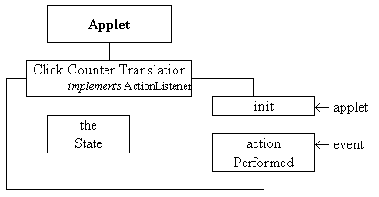

As shown in the instance diagram in Figure 1.8 the ClickCounterTranslation class provides theApplet which implements the application. Its' responsibility is to construct an instance of the clickCounter class, called theCounter, and an instance of the clickCounterPresentation class, called itsInterface; and to place the application into its initial state. It also has the responsibility of listening to the events generated from the interface, calling methods of the application module and instructing the visible part of the application how to change itself in response. The class diagram of the ClickCounterTranslation class is given in Figure 1.13.

Figure 1.13 ClickCounterTranslation class diagram.
The init() method will be automatically called after the inherited (Applet) constructor method has been called and before the Applet is posted to the display. It will be used to create the instances used by this interface, as shown in Figure 1.8, and to place them, and itself, into a well defined initial state. The only other method is actionPerformed(), so called as it is the method which will be performed when an event is dispatched to it from any AWT components which have registered it as their action listener. This is the only method which this class must supply in order for it to implement the ActionListener interface. The implementation of this class, as far as the end of the init() method is as follows.
0001 // Filename ClickCounterTranslation.java.
0002 // Provides the behaviour for the interactive ClickCounter.
0003 // Written for the Java Interface book Chapter 1.
0004 //
0005 // Fintan Culwin, v 2.0, August 1997.
0006
0007 import java.awt.*;
0008 import java.awt.event.*;
0009 import java.applet.Applet;
0010
0011 import ClickCounter;
0012 import ClickCounterPresentation;
0013
0014 public class ClickCounterTranslation extends Applet
0015 implements ActionListener {
0016
0017 private final int INITIAL_STATE = 0;
0018 private final int MINIMUM_STATE = 1;
0019 private final int COUNTING_STATE = 2;
0020 private final int MAXIMUM_STATE = 3;
0021 private int theState = INITIAL_STATE;
0022
0023 private ClickCounter theCounter;
0024 private ClickCounterPresentation itsInterface;
0025
0026
0027 public void init() {
0028 theCounter = new ClickCounter( 0, 5);
0029 itsInterface = new ClickCounterPresentation( this);
0030 itsInterface.setValueDisplay( theCounter.countIsAsString());
0031 itsInterface.setMinimumState();
0032 theState = MINIMUM_STATE;
0033 } // End init.
The import statements on lines 0007 to 0009 provide access to the Java API resources required by this class and on line 0011 and 0012 to the ClickCounter class which provides the application part and to the ClickCounterPresentation class providing the presentation part. These two importations are not strictly required, however they document the dependencies between this source code file and the other two source code files in the application, as such they should be used even though they are technically not required by Java in this case.
On lines 0017 to 0020 four manifest class-wide constants which are used to represent the states of the interface are declared, and on line 0021 an integer instance variable, called theState, is declared and initialized to the manifest value INITIAL_STATE. The intention is that the value of this variable will always record the current state of the application and its interface.
On line 0023 an instance of the ClickCounter class, called theCounter, is declared and on line 0024 an instance of the ClickCounterPresentation class, called itsInterface. These two instances provide the two objects which are used by the application, as shown in Figure 1.8.
The first step of the init() method, on line 0028 is to construct the ClickCounter instance; the arguments to the constructor, 0 and 5, delimit a very small range of values which it can count between in order to allow the interface to be easily demonstrated and tested. On line 0029 itsInterface is constructed, passing as an argument the identity of the ClickCounterInstance which is currently being initialized (this) As explained above, this will cause the interface components to be created and mounted onto this Applet's Panel and will also cause this instance to become the ActionListener of the buttons on the interface.
Once constructed the setValueDisplay() method of the itsInterface instance is called passing as an argument the String obtained from the theCounter's countIsAsString() method. This will cause the valueDisplay component of the interface to display the initial value of theCounter when it subsequently first becomes visible. The final initialisation steps are to call the itsInterface setMinimumState() method to effect the transition from the initial to the minimum states, as required by the state transition diagram, and the value of theState is set to reflect this. When the init() method concludes the applet will show itself to the user on the desktop and, as the ClickCounterPresentation instance has constructed the interface within the applet's window, this will cause the interface to become visible to the user.
The actionPerformed() method will be called every time the user presses one of the buttons on the interface; the ActionEvent generated in response to the press being passed as an argument to the method. The implementation of this method is as follows.
0036 public void actionPerformed( ActionEvent event) {
0037
0038 String buttonPressed = event.getActionCommand();
0039
0040 if ( buttonPressed.equals( "increment")) {
0041 if ( theState == MINIMUM_STATE) {
0042 itsInterface.setCountingState();
0043 theState = COUNTING_STATE;
0044 } // End if.
0045 theCounter.count();
0046 if ( theCounter.isAtMaximum()) {
0047 itsInterface.setMaximumState();
0048 theState = MAXIMUM_STATE;
0049 } // End if.
0050
0051 } else if ( buttonPressed.equals( "reset")) {
0052
0053 theCounter.reset();
0054 itsInterface.setMinimumState();
0055 theState = MINIMUM_STATE;
0056
0057 } else if ( buttonPressed.equals( "decrement")) {
0058
0059 if ( theCounter.isAtMaximum()) {
0060 itsInterface.setCountingState();
0061 theState = COUNTING_STATE;
0062 } // End if.
0063 theCounter.unCount();
0064 if ( theCounter.isAtMinimum()) {
0065 itsInterface.setMinimumState();
0066 theState = MINIMUM_STATE;
0067 } // End if.
0068 } // End if.
0069
0070 itsInterface.setValueDisplay( theCounter.countIsAsString() );
0071 } // End actionPerformed.
0072
0073 } // End class ClickCounterTranslation.
This method will be called whichever button is pressed and the event instance will contain a copy of the actionCommand attribute of the button which caused it to be generated. The actionPerformed() method commences, on line 0038, by retrieving this attribute from the event by using its getActionCommand() method. The remainder of the method is a three way selection which contains a branch for each button.
Lines 0041 to 0049 contain the steps required to respond to a press of the incrementButton, and starts by effecting the transition from the MINIMUM_STATE to the COUNTING_STATE if the value of the theState attribute indicates that it should be taken. This is accomplished by calling the itsInterface's setCountingState() method and updating the value of theState to reflect this. Following this, on line 0045, the count() method of theCounter instance is called to record the occurrence and finally, on lines 0046 to 0049, the transition to the MAXIMUM_STATE is taken, if appropriate.
On lines 0053 to 0055 a press of the resetButton is handled by resetting theCounter, setting the itsInterface to its minimum state and recording this in theState. Lines 0059 to 0067 handle a press of the decrementButton in a manner comparable to the way in which a press of the incrementButton was handled. The last step of the actionPerformed() method is to update the valueDisplay component on the interface by passing to its setValueDisplay() method the value obtained from theCounter's countIsAsString() method.
Referring back to Figure 1.7 the identity of the ClickCounterTranslation instance is registered with the three buttons on the interface as their listener when they are constructed. Subsequently, when the user presses one of the buttons an ActionEvent, containing an actionCommand attribute to identify which button, is dispatched to its listener. When the event is received by the ClickCounterTranslation instance its performAction() method is called passing as an argument the ActionEvent instance received. Within the performAction() method public methods of the ClickCounter instance, theCounter, are called to perform the appropriate application functionality. Public methods of the ClickCounterPresentation instance, itsInterface, are also called to change the appearance of the interface to provide feedback to the user.